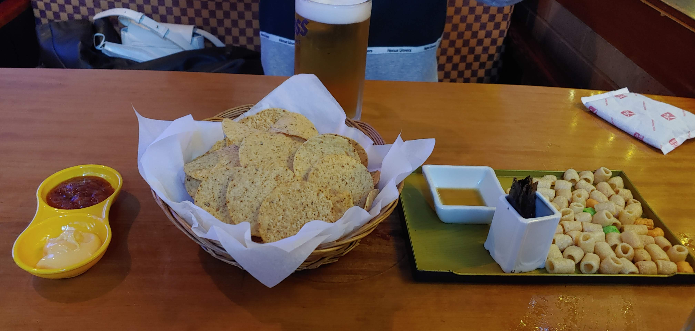

♥우리가 함께한지♥
♥누나랑 사귄날♥
이날은 누나랑 사귀기 시작한 날이야.
처음본건 이틀전에 지훈이네서 술마실 때 처음봤지.
그때부터 나는 누나가 너무너무 마음에 들었어 표현은 많이 안했지만.
그래서 누나랑 조금이라도 더 대화하려고 일부러 핸드크림 가지고왔는데 누나한테 계속 빌렸어.
아주 영악했네 지금 생각해보니까 ㅋㅋㅋㅋㅋ

아무튼 이날 다들 잠들었을 때 마지막까지 계속 술 마시면서 이런저런 얘기를 나누다가 내가 다가갔지 !
그때의 설렘과 떨림은 잊을 수가 없는 것 같아..ㅎㅎ
그 날 생각하고 다짐했던 것들이 다 지켜질 수는 없겠지만
최대한 지켜가려고 노력하는 서로가 됐으면 좋겠어 !
사랑해 누나♥
사진은 누군가의 남친이 혹시라도 볼까봐 이런걸로 올렸어 ^~^
♥사랑하는 누나랑 첫 데이트♥
이날은 누나랑 첫 데이트한 날이였어 !
원래는 월요일에 보기로 했는데 누나가 제사라해서 화요일에 봤던 날이야.
내가 진짜 먹을거 잘 못정하는데 누나가 정해줘서 갈비찜에 소주먹으러 간 날이지.
서로 술을 멈추질 못해서 소주 4병인가 먹은 날이였어 첫 데이트에..ㅋㅋㅋ
그래서 나는 바로 다음날에 휴가내고 집에서 쉬었던걸로 기억해.
누나는 독하게도 출근했더라구 ㅋㅋㅋㅋㅋ 대단하다고 생각했어.

이날이 아마 누나가 입은 옷을 보고 내가 비슷한 옷으로 갈아입고 나온 날일거야.
누나가 귀엽다면서 이뻐해줘서 너무너무 기분이 좋았었어♥
이때 사진보니까 나도 아직 펌하기 전이고 누나도 앞머리 자르기 전이네 ㅋㅋㅋ
첫 데이트라 굉장히 많이 설레고 긴장됐는데 누나랑 있으니까 되게 마음이 편하더라.
이때부터 내 반쪽인걸 예감했지~♥
누나랑 처음 영화본 날 !
이날은 누나랑 처음영화보러 간 날이였어 !
이날 아침인가 전날 저녁인가 엄마가 만들어준 떡볶이먹고 배탈나가지고..
완전 똥쟁이되서 굉장히 슬픈 날이였어 ㅋㅋㅋㅋㅋㅋㅋ
누나랑 처음 영화보러 갔는데 코로나때문에 한칸 띄어서 앉아야되서 너무 애잔했어.
영화 "담보"본 날인데 약간 누나가 조울증마냥 울고 웃고 반복해서
엉덩이에 뿔나서 의자 뚫어버리는줄 ㅋㅋ;;
본인 입으로 잘 운다고 했는데 실감한 날이였어.
웃기도 잘웃고 감정에 되게 충실한 사람이구나 싶었어.

너무 많이 울어서 누나가 완전 물만두마냥 얼굴이 뜨거워진게 또 그렇게 귀엽더라구♥
누나에 대해서 조금씩 하나하나 알아가는게 너무나도 좋고 행복했던 하루였어♥
누나한테 처음으로 꽃선물 한 날♥
이날은 내가 누나랑 안경맞추러 수원역에 간 날이였어 !
누나 기다리면서 시간이 남아서 서점에 가서 공부할 책을 찾고있었는데
서점에 들어갈 때부터 꽃집이 자꾸 눈에 들어오더라.
옛날에 한번 꽃선물에 대해서 얘기한 적이 있었는데
그때, 요즘 되게 작은 꽃다발같은 것도 많다면서 좋다고 얘기하던 누나가 생각이 났어.
이날 누나 겉옷이 핑크여서 핑크색 장미가 눈에 들어와서 선물했는데
누나가 진짜 완전 아이처럼 방방뛰면서 신나고 행복해하는게 그렇게 또 보기좋더라♥
별거아닌 선물에 그렇게 기뻐해주는 누나가 너무 고맙고 사랑스러웠어♥
나중에 꽃말을 찾아보니까 핑크색 장미의 꽃말은 행복한 사랑이래
우리한테 참 잘어울리는 선물이였던 것 같아♥
앞으로도 계속 행복한 나날이 계속되었으면 좋겠어 !
누나랑 처음으로 서울나들이 간 날♥
이날은 내가 누나랑 초밥이 너무 먹고싶어서 서울에 간 날이야.
나도 가본적 없는 가게이기도하고 누나랑 같이 간다는 생각에 너무너무 설렌 날이였어♥
누나도 너무 맛있게 먹어주고 되게 만족해해주는 것 같아서 너무 기분이 좋았어.
그 뒤에 한강에 가는데 지도만 보고 가까운 줄 알고 걸어갔다가 그 더운날 30분을 걸어버림 ㅋㅋㅋ
그래도 군말없이 걸어준 누나가 너무 고맙고 기특했어.
가자마자 너무 더워서 카페부터 찾던 우리 ㅋㅋㅋㅋ
스무디킹에서 조금 쉬려고 했는데 실내가 더 덥더라;;
밖에 벤치에 앉아서 한강보면서 그냥 누나랑 쉬는데 이런게 쉬는거구나 싶더라.
누나랑 쉬니까 그냥 흘러가는 시간인데 너무 의미있고 행복한 시간이였어♥
그 뒤에 자전거 빌려서 탔는데 2인용으로 빌려서 탔는데 누나가 앞에 탄다했지 ㅋㅋㅋ
처음 출발이 좀 불안해서 솔직히 뚝배기 깨지는거 아닌가 잠깐 의심했던 내가 미안해..ㅎㅎ
자전거 운전도 잘하고 앞에서 잘 리드하는 21세기 신여성의 표본을 보았어.
패달 안밟고 무임승차를 꽤 많이 하긴 했지만?ㅋㅋㅋㅋ
돌아와서 곱창먹자고 갔는데 곱창집 닫아서 다른술집 갔는데
고추장찌개에 소주 2병에 맥주 7병인가? 먹고 고주망태가 되버린 날.
그래도 누나가 나 잘 챙겨줘서 너무너무 고마웠어♥
그래도 술먹고 챙기는 건 내가 해주고 싶으니까 앞으론 조심해보도록 할게 !
누나랑 처음으로 열기구 탄 날♥
누나랑 처음으로 열기구를 같이 탄 날이야 ㅋㅋㅋ
화성야행한다고 예린씨가 알려줘서 보러갔다가 김치찜만 먹고 별거없네~ 하면서 창룡문까지 걸어갔잖아
가서 열기구 타자고 했는데 열기구가 생각보다 엄청커서 같이 신기해하고 사진도 찍고
근데 또 사진찍고 있는 우리누나모습이 어찌나 귀엽고 사랑스럽던지♥
나는 찍으라는 열기구는 안찍고 열기구찍는 누나 뒷모습만 찍고 있었어 ㅋㅋㅋㅋ

열기구가 생각보다 인기가 많아서 한시간이나 기다렸지만 누나랑 있으니까 시간 금방가더라
근데 막상 열기구타니까 막 너무 높기도하고 흔들리고 그래서 너무 무서웠어 ㅠㅠ
누나는 신나가지고 막 동영상도 찍고 사진도 찍고 그랬는데 ㅋㅋ
20몇층 높이라고 그랬나? 생각보단 그렇게 높지않았는데 그래도 무섭더라구 ㅎㅎ
누나랑 그렇게 열기구도 타보고 민호도 소개시켜주고 이날도 정말 기분좋은 하루였어♥
놀이기구는 같이 못타줄 것 같아 미리 미안해 누나..♥
누나랑 처음으로 연 날려본 날♥
이날은 누나랑 처음 연 날려본 날이야 ㅋㅋㅋㅋㅋㅋ 그냥 이거 자체로 왜이렇게 웃긴지 모르겠네 ㅋㅋㅋㅋㅋㅋ
나는 초등학교 이후로 처음이라 20여년만에 연을 날린다고 했더니 누나는 몇년 안됐다고 하는게 너무 귀엽더라❤

연도 한방에 척척 잘 날리는 누나모습이 어찌나 든든하던지~
근데 되게 큼지막한 DIY 연들이 꽤 있어서 누나도 다음엔 우리도 만들어서 날리자 했잖아 ㅋㅋㅋ
날이 좋을 때 꼭 한번 같이 만들어서 날리도록 하자❤ 그때는 소원도 적어서 !
마지막엔 연을 다 날리고 어디다 버리지? 하다가 나무에 묶고 훨훨날게 생명을 불어넣어주는 나쁜짓을하고 떠났잖아 ㅋㅋㅋ
그래도 우리 시야에 벗어나기 전까지는 계속 날고있어서 조금은 죄책감을 덜 수 있었어 ㅋㅋㅋㅋㅋㅋㅋㅋ
행궁동에 왔는데 치킨은 먹어줘야지하고 치킨집에 갔는데 그 유명한 치킨집들은 다 줄서서 기다려야 되는게 싫어서
내가 그냥 누나네 집 앞에 치킨집에 갈까?라고 했는데 선뜻 좋다고해줘서 너무 고마워❤
누나 집 앞에 있는 치킨집에가서 맥주를 마시는데 너무 찰떡이여서 음주한도를 또 초과해버린 우리~
이 전날에 음주한도 벌금제를 실시했는데 ㅋㅋㅋㅋㅋㅋㅋㅋ 당일날 닭발에 소맥먹고 벌금내고 이 날 또 치맥으로 벌금내고..
정말 우리다운 행동이였던 것 같아 !❤
그래도 누나랑 있어서 좋았고 그 차곡차곡 모인 돈으로 여행가자고 했던 것도 좋아서 딱히 벌금에 얽매이지 않고 있어.. 이럼 안되지않나??ㅋㅋㅋㅋㅋ
아무튼 앞으로도 맛있는거 좋은거 할때는 항상 누나랑 함께였으면 좋겠어!❤
누나랑 처음 내 생일 같이 보낸 날♥
이날은 누나랑 처음으로 맞은 날이였어
원래 생일을 잘 안챙기는 성격이여서 내 생일인지도 잘 인지하지 못했는데, 누나가 발 벗고 나서서 챙겨줘서 너무 고마웠어❤
우리가 원래 먹으려 했던건 회였는데 너무너무 배고파서 1인 1토스트를 먼저 먹어버렸잖아 ㅋㅋㅋㅋㅋ
배고픔을 못이기는 우리가 너무 웃기기도하고 ㅋㅋㅋㅋ 그래도 누나가 너무 귀여웠어❤
그래도 허기를 달래고 횟집에 무사히가서 광어회 포장해서 먹었어 !
되게 좋은 하루였는데 사진이 많이 없는게 조금 아쉽다❤
누나가 케익과 초가 없다면서 많이 아쉬워했잖아 ㅎㅎㅎ
나보다도 더 내생일을 챙겨주는 사람이 한사람 늘어서 너무너무 다행이고 고맙다고 생각해❤
딱히 착하게 산 적이 없는데 이렇게 좋은 사람 만나서 너무 큰 행운 인 것 같아요❤
너무너무 고맙고 많이 사랑해❤
누나랑 보낸 첫 빼빼로데이♥
처음으로 누나랑 맞이하는 빼빼로데이였어 !
곱주갔는데 뜻밖의 한우곱창먹고 ㅋㅋㅋ 조금은 과소비를 한 날이지만 그래도 너무너무 좋은 하루였어❤
조금 알딸딸한 기분으로 코노를 가서 노래를 부르는데 역시 우리누나는 노래 부르는 것도 귀엽더라❤
근데 문제는 노래부르다 술이 다 깨서 또 술을 마시러 갔다는거지 ㅋㅋㅋㅋㅋㅋ
원래는 취하지말자고 정해놓고 약속한 기준인데 술을 마셨는데 왜 안취했냐며 술을 더 마시러 가자고.. ㅋㅋㅋㅋ
그래서 우리 2차가서 가볍게 맥주마시려고 나쵸랑 생맥주시켰는데 내가 또 누구랑 시합하듯이 마셨잖아.
그럴 생각이 없는데 눈앞에 맥주가 있으면 자꾸 그렇게 되더라구 ㅋㅋㅋㅋㅋㅋㅋ
나중에 취업해서 회식해서 그런일 없도록 지금부터 차근차근 잘 관리해둬야겠어 ㅎㅎㅎ
누나한테 받은 빼빼로는 두갠데 내가 준 건 하나여서, 그리고 옆에 무슨 내용이 있는데 나는 그것도 모르는 문찌라..
아무거나 사서 준건데 그래도 뜻밖에 의미가 맞아서 아주아주 안심했어!❤
누나는 빼빼로 상자 안에 편지를 어떻게 넣었냐며 엄청 신기해했는데 ㅋㅋㅋㅋ 그것도 참 귀엽더라❤
앞으로도 이렇게 귀엽고 사랑스러운 연애가 오래 이어졌으면 좋겠어!❤
누나의 최애 영화를 같이 본 날♥
이날은 누나랑 누나의 최애 영화 클래식을 본 날이였어.
사실 포스터도 너무 옛날이고해서 몇번이고 추천받았었는데 안봤던 영화였어 ㅎㅎㅎ
근데 생각보다 재밌고 감동적이여서 너무 좋았어❤
누나랑 같이 있어서 뭔들 안좋겠느냐만 너무 행복한 거 있지 ~
아버님께서 어릴때 조승우를 닮으셨다고 더 애착이 간다는 누나의 말에 가족을 참 많이 사랑하는게 느껴졌어.
그런 착하고 이쁜 마음을 갖고있는게 너무너무 부럽기도하고 자랑스럽더라❤
노래도 내용도 어디하나 빠질 것 없는 영화 알려주고 같이봐줘서 너무너무 고마웠어❤
근데 맥주마시면서 진짜 화장실 오조오억번 간 것 같아서 흐름이 너무 끊겨서 그런가 사실 누나가 또 울줄알았는데.. ㅋㅋㅋㅋㅋ
안울고 씩씩한 우리누나였어❤ 다음에도 또 같이 편하게 영화보면서 같이 있을 수 있는 날을 기다릴게❤
이 사진을 보고 누군가 어딘지 알아볼 수 없길 바라며..ㅋㅋㅋㅋ
누나가 술에 취한 날 !
오늘은 누나가 처음으로 술에 취한 날이다.
여기다 쓰는 이유는 첫째로 내 나름 중요한 기억들을 생생히 기록하고 싶어서이고 또 하나의 이유는 취한 사람에게 이런저런 얘기를 해봐야 큰 소용이 없기 때문이다.
서로 술을 좋아해서 첫 만남부터 지금까지 거의 만날때마다 취했던 우리여서 술에 대한 걱정이 크긴 했다 ㅋㅋㅋ
그래서 서로가 없는 자리에서는 취해서 기억이 안날 때 까지는 술을 먹지말자고 서로에게 약속을 했다.
하지만 정확히 언제인지는 기억이 나지 않지만 내가 친구들과 술을 먹고 누나를 만나러 갔는데, 만난 직후부터 기억이 안나서 누나한테 술주정을 했다 ㅠㅠ
누나는 군말없이 잘 받아줬고, 덕분에 별 탈 없이 잘 넘길 수 있었다.

오늘은 그게 내 차례였던 것 같다. 누나가 꽤 많이 취해서 전화를 걸어왔고, 꼭 얼굴을 보고싶다고 전화로 말해줬다.
그 마음은 너무 이쁘고 고마워서 얼굴을 보기로 했다♥
자기 집 앞에서부터 우리집까지 걸어온다고해서 조금 급하게 옷을 갈아입고 나가서 전화를 걸었다 !
그래도 별 탈 없이 만났고 우리 누나는 했던 얘기를 두세번씩 계속해줬다 ㅋㅋㅋㅋㅋㅋ
안취한거 맞냐고 그러면 다음날 오늘 무슨일이 있었는지 물어봐도 되냐는 질문에 누나는 그런건 안된다고 했다 ㅋㅋㅋㅋㅋㅋ
그런 누나가 귀여워서 들었던 얘기를 복습하면서 누나 집까지 걸어갔다 ㅋㅋㅋ
누나한테 보러 와주는 건 고맙지만 밤은 위험하니까 다음부터는 차라리 우리집 앞에 와달라고 부탁을 했다.
누나도 알았다고 동의했으니까 다음부터는 이런일이 없길 바란다 !♥
이 글을 읽고 우리 누나도 조금은 더 신경써주길 바라고, 나 또한 앞으로 걱정끼칠 일이 최대한 없도록 노력해야겠다♥
늦게 잔 누나가 다음 날에 숙취가 없길 간절히 바라며.. :^)
아침에 누나랑 얘기하면서 스스로도 줄여야겠다고 생각해줘서 고맙고, 숙취는 없는 것 같아서 다행이다♥